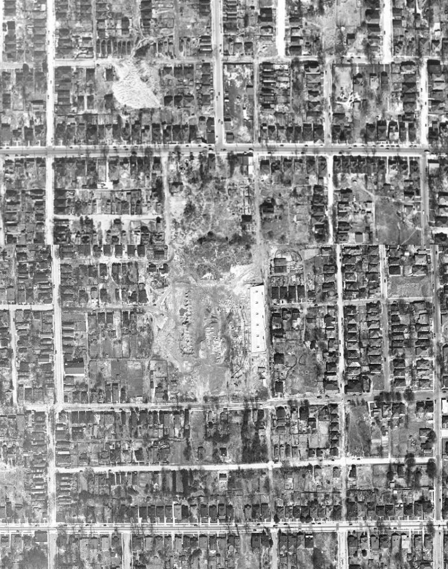

A place for children to play
Pre-1947
This part of Summerhill sits at one of the neighborhood’s lowest points. Intrenchment Creek once flowed through the area before being routed underground into the city’s sewer system. Until about 1920, the land was used as a city dump. After the dump closed, it became open greenspace, where neighborhood children played and residents hoped the city would eventually create a public park or playground.